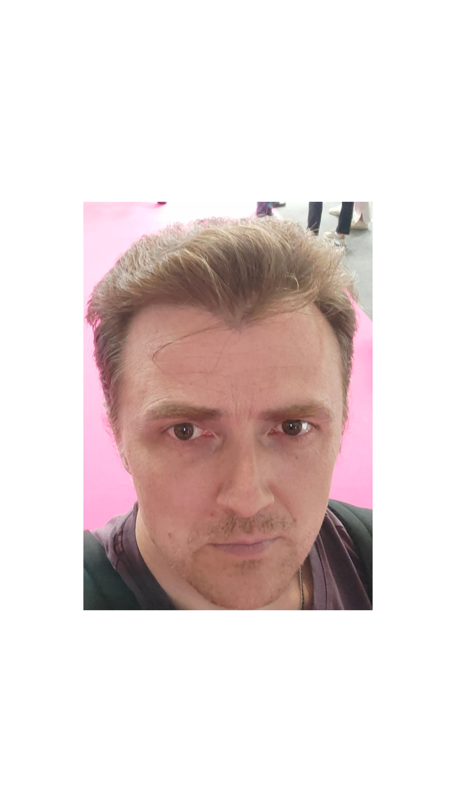

Serhii Antoniuk
Desarrollo Web Fullstack, Bases de Datos

Acerca de mí
Con una trayectoria de 20 años como desarrollador e ingeniero de software, me destaco por mi atención al detalle y mi búsqueda constante del mejor resultado en cada proyecto. Busco expandir mi experiencia en lenguajes modernos y populares, así como seguir creciendo en el campo de la tecnología de la información. Mi objetivo es crear aplicaciones lógicas, fáciles de entender y simples de modificar, con el fin de ser una contribución valiosa para su equipo y un ejemplo a seguir para otros.